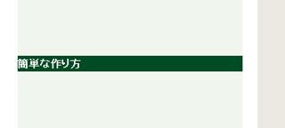

paddingとmarginの違い
「padding」は内側にとる余白であるのに対し、「margin」は外側にとる余白という違いがあります。このうち「margin」については、指定することでデザインが崩れてしまったり、あるいは何も指定しなかった際、ブラウザが勝手に間隔をとってしまうことがあり、使い方が難しいです。
■paddingとは何ですか？
paddingは要素の内側にとる余白のことです。
当サイトのサイドバーの「簡単な作り方」の箇所でいいますと、paddingを何も指定しないデフォルトの状態では、以下のように文字がびっちりと詰まっています。

この箇所に以下のように文字の上下左右に間隔を空けたい場合、この要素にpaddingを指定することで余白を空けることができます。
例えば、この緑色の部分の<div class="example">簡単な作り方</div>の要素に、左から39pxの余白を空け、上に5px、下に4pxの余白を空ける場合、スタイルシートには以下のように書き込みます。
.example {
padding-left: 39px:
padding-top: 5px;
padding-bottom: 4px;
}
上部の余白を指定する場合は「padding-top」、左の余白を指定する場合は「padding-left」などと指定します。
paddng-top: 上の余白の値;
padding-bottom: 下の余白の値;
padding-left: 左の余白の値;
padding-right: 右の余白値;
これを簡略化して、padding: 上 右 下 左;でまとめて書くこともできます。また、0pxの場合は「px」などを記述する必要がなく、単に「0」と記述できます。
.example {
padding: 5px 0 4px 39px;
}
このように設定すると、上記のように適度に間隔が空いた形で表示されます。
ちなみに、CSSでpaddingを何も指定しないデフォルトの状態では「padding: 0px;」になりますので、0pxを指定する場合はpaddingそのものを記述する必要がありません。
また、高さのあるボックスの上下の中央に配置する際、paddingで上下に余白を取ることもできますが、ブラウザによっては微妙にずれることもあります。そのような場合、line-heightで行の高さを指定すると上下均等に余白を取ることができます。
marginは外側にとる余白のこと
paddingは内側の余白であるのに対し、marginは要素の外側にとる余白のことです。
「お客さんを一人紹介するとマージン千円」のようなキャンペーンがありますが、このマージンは利益とか、余分とか、外側に超えてはみでる部分のニュアンスになります。
上のpaddingの箇所で説明した「簡単な作り方」の箇所の例でいいますと、要素の外側の上下に20px分の余白を空ける場合、以下のように指定すると外側に余白が出てきます。
.example {
margin: 20px 0 20px 0;
}
内側の余白のpaddingも一緒に設定すると以下のようになります。
.example {
padding:5px 0 4px 39px;
margin:20px 0 20px 0;
}
使用上の注意
このmarginを左右で設定した場合、左右に余白をとる分、レイアウトからはみ出てしまうケースもあり、サイトのデザインが崩れてしまうこともあります。
paddingと比較するとmarginの使い方は若干難しいです。
また、marginを0で設定した場合はびっちりと詰まるのに対し、marginを何も設定せずに記述しなかった場合は、ブラウザ側で自動で間隔をとってしまうこともあります。
「marginを記述しても崩れてしまい、記述しなかったとしても崩れてしまう…。」といった場合には、とりあえず、marign:0;を指定しておき、要素間の余白をびっちり詰めておくことをおすすめします。
paddingについては、何も記述しなかったとしても特に問題が出るケースはありませんが、デフォルトの状態でブラウザでの表示を確認しつつ、適宜、調節していくとよいでしょう。
padding や margin のショートハンドでの書き方
このpaddingやmarginの値を記述する際、同じ値があれば省略して記述することができますが、この簡略化して書くことはショートハンドと呼びます。
■ショートハンドの４パターン
①すべて同じ値 → padding: 何px;
②「上下」と「左右」が同じ → padding:「上下」「左右」;
③「左右」だけが同じ → padding:「上」「左右」「下」;
④すべてバラバラ → padding:「上」「右」「下」「左」;
「padding: 0px;」などの場合、単位を省略して「padding: 0;」と書くことができます。
また、padding:の後に半角スペースを空けてから値を記述するのが一般的です。
①すべて同じ値の場合
paddingやmarginの値が「上下左右」すべて同じ場合、ひとつだけ記述して以下のように書くことができます。
padding:何px;
例えば、すべて4pxで余白を取る場合、このように記述します。
.example {
padding-top: 4px;
padding-bottom: 4px;
padding-right: 4px;
padding-left: 4px;
}
これはすべて同じ値なので、省略して以下のように書けます。
.example {
padding: 4px;
}
これは④のように、次のようにも書けます。
.example {
padding: 4px 4px 4px 4px;
}
これらはすべて同じ意味です。
②「上下」と「左右」が同じ値の場合
上下と左右の余白は均等にとられているケースが多いです。
この場合、２つを記述して以下のように指定することができます。
padding:「上下」 「左右」;
例えば、「上下」で0px、「左右」で4pxの余白を取る場合、以下のように記述します。
.example {
padding-top: 0;
padding-bottom: 0;
padding-right: 4px;
padding-left: 4px;
}
これは上下と左右が同じ値なので、以下のように省略して書けます。
.example {
padding: 0 4px;
}
次のように書いても同じ意味です。
.example {
padding: 0 4px 0 4px;
}
③「左右」だけが同じ場合
同じように、左右対称で均等に余白がとられている場合、３つを記述して以下のように省略できます。
padding:「上」「左右」「下」;
.example {
padding-top: 9px;
padding-bottom: 7px;
padding-right: 4px;
padding-left: 4px;
}
これを省略して書くと以下のようになります。
.example {
padding: 9px 4px 7px;
}
ただ、これはあまり使うことがないかもしれません。
④すべてバラバラの値の場合
4つの値をそれぞれ個別に記述するのが基本的な書き方です。
padding:「上」「右」「下」「左」;
この④の書き方だけ覚えておけば、とりあえずはすべてに対応できるでしょう。